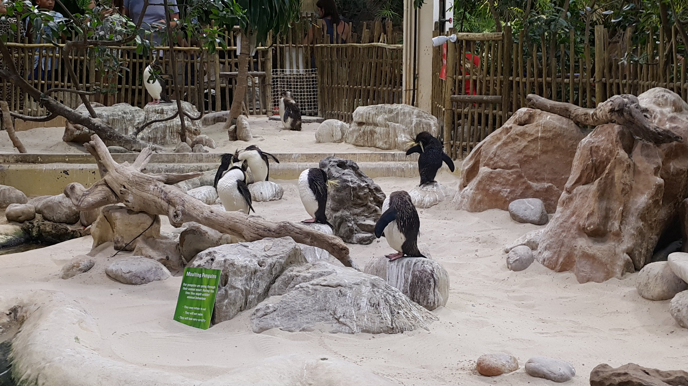
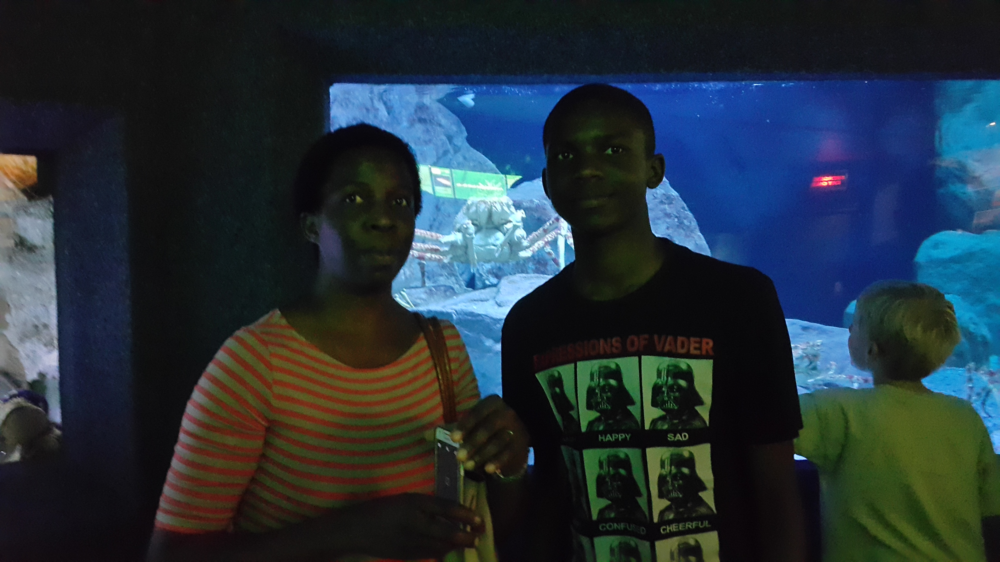
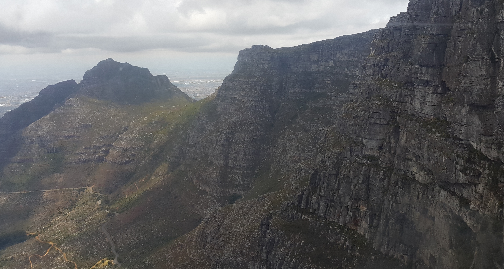

In 2016, I travelled to Cape Town, South Africa with my parents. We saw a lot of different tourist sights around the city. Cape Town, nestled between the iconic Table Mountain and the sparkling Atlantic Ocean, is a destination like no other. This vibrant city in South Africa offers a unique blend of natural beauty, rich history, and diverse cultures. Although I was not there for long, it was a trip I will never forget.
Cape Town offers incredible opportunities to experience marine and wildlife up close. From the captivating Two Oceans Aquarium to the unique World of Birds Wildlife Sanctuary, there's something for every animal enthusiast.
Two Oceans Aquarium Highlights:
The mesmerizing jellyfish exhibits and colorful coral displays.The Predator Exhibit, featuring ragged-tooth sharks swimming gracefully in a massive tank. The playful African penguins, always a crowd favorite.It's an immersive experience that combines education and entertainment, perfect for all ages.
I particularly enjoyed the aquarium as it was my first time seeing all those animals up close
One of the New Seven Wonders of Nature, this flat-topped mountain provides stunning views of the city and coastline . Tourists take a cable car to the summit or hike up for an unforgettable experience. I personally took the cable car which was about a 10 minute trip going to or from the summmit. While at the top I enjoyed the food of the restaurant situated there. Unfortunately, the mist built up as I was ascending on the cable car so I could not get a picture of the view of the city below.
Cape Town has a magnetic energy that blends natural beauty, cultural richness, and a laid-back lifestyle. It’s a city where every corner tells a story, and every moment feels like an invitation to explore. Whether you're an adventure seeker, history enthusiast, or simply looking for a beautiful escape, Cape Town has something for everyone.